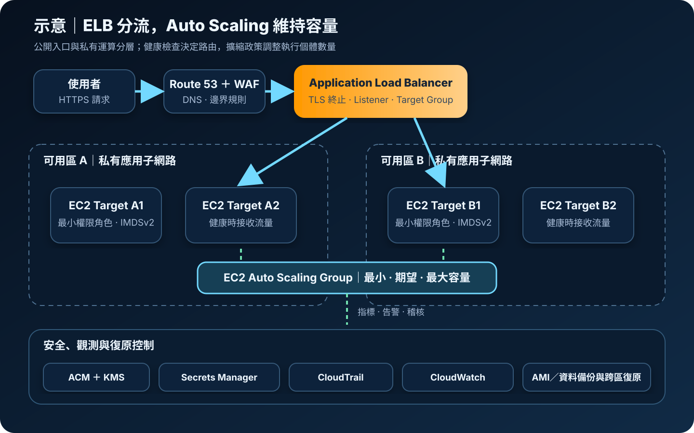

Elastic Load Balancing 與 EC2 Auto Scaling：分流與彈性容量
Elastic Load Balancing（ELB）把連線或請求分配給健康目標；EC2 Auto Scaling 依容量設定、指標與健康狀態增減執行個體。兩者搭配可降低單點故障與尖峰容量不足，但不會自動修正應用程式狀態、資料一致性或錯誤的安全設定。
作者：Dr. William｜查閱與發布：2026-08-30
服務定位
Elastic Load Balancing是受管流量分配服務。Application Load Balancer（ALB）處理 HTTP/HTTPS，可依主機、路徑、Header 等條件路由；Network Load Balancer（NLB）處理 TCP、UDP、TLS 與高效能第 4 層連線；Gateway Load Balancer（GWLB）用於部署與擴展相容的虛擬網路設備。Classic Load Balancer 屬上一代產品，新架構通常先評估 ALB 或 NLB。
Amazon EC2 Auto Scaling以 Auto Scaling Group（ASG）管理 EC2 執行個體的最小、期望與最大容量，依 Launch Template 建立一致節點。ASG 可替換不健康執行個體、跨多個可用區配置容量，並以排程、目標追蹤、步進或預測擴縮政策調整規模。
核心概念
Elastic Load Balancing
- Listener：定義前端協定與連接埠，依規則轉送、重新導向或回傳固定回應。
- Target Group：管理執行個體、IP 或 Lambda 等目標，並執行獨立健康檢查。
- 健康路由：只有通過門檻的目標接收新流量；健康檢查路徑應能反映服務是否可安全處理請求。
- 跨可用區：負載平衡器節點與目標分布方式會影響容錯、流量與費用，需按類型確認設定。
EC2 Auto Scaling
- Launch Template：保存 AMI、執行個體類型、Security Group、Instance Profile、儲存與啟動設定的版本。
- 容量邊界：最小容量維持基線，期望容量是當前目標，最大容量限制擴張上限。
- Scaling Policy：Target Tracking 維持目標指標；Step Scaling 依告警幅度調整；Scheduled Scaling 處理已知時段。
- Warmup 與冷卻：新節點尚未可用時不應被錯算為有效容量；應用啟動時間直接影響擴容速度。
適合與不適合的使用情境
適合
- 可水平擴展的 Web、API、微服務、遊戲或連線服務，需要跨可用區分流與自動容量調整。
- 流量有尖峰、週期或成長趨勢，且可用 CPU、每目標請求數、佇列深度或自訂指標表達容量壓力。
- 需要藍綠、滾動更新或逐步註冊新節點，並以健康檢查阻止故障目標接收新流量。
不適合或需先改造
- 工作階段只存在單一主機記憶體、檔案只寫本機磁碟，或節點之間無法共享必要狀態的應用。
- 資料庫寫入節點、授權綁定主機或無法安全併行處理的系統，不能只增加 EC2 數量解決限制。
- 啟動時間極長且未預留容量，或沒有可代表實際壅塞的指標；自動擴縮可能來不及因應突發流量。
- 僅有單一固定低流量節點且可接受中斷；負載平衡器與多可用區基線可能增加不必要成本。
示意故事案例：活動報名網站因應瞬間流量
以下為架構示意，不代表特定組織或正式部署。一個活動報名網站平時維持兩台私有 EC2，分布在兩個可用區。Route 53 將網域導向公開 ALB，ALB 以 ACM 憑證終止 TLS，AWS WAF 過濾常見惡意請求，再把流量送到 Target Group。當每個目標的請求數持續超過設定值，ASG 依 Launch Template 增加節點；新節點完成應用啟動及健康檢查後才接收流量。工作階段存於外部受管資料層，應用角色只取得必要權限。CloudWatch 監控延遲、錯誤率、健康目標與容量，CloudTrail 保存設定異動稽核；映像與資料層另有備份及跨區復原程序。

建置與運作流程
- 定義服務目標：列出協定、流量型態、延遲、錯誤率、RTO、RPO、區域、最低容量與可接受擴容時間。
- 選擇 ELB 類型：HTTP/HTTPS 內容路由通常採 ALB；固定 IP、第 4 層或 UDP 需求評估 NLB；網路設備服務鏈評估 GWLB。
- 建立網路分層：負載平衡器使用至少兩個適合的可用區；應用節點放在私有子網路。ALB Security Group 只開放必要入口，Target Security Group 只接受來自 ALB 的應用連接埠。
- 建立 Launch Template：使用受控 AMI、加密 EBS、IMDSv2、最小權限 Instance Profile 與固定版本。機密放在 Secrets Manager 或 Parameter Store，由執行角色於啟動時取得，不寫入 User Data、AMI 或日誌。
- 建立 Target Group 與健康檢查：設定專用路徑、成功碼、間隔與門檻。健康端點應檢查處理請求的關鍵條件，但避免因非必要下游短暫失敗造成全體下線。
- 建立 ASG：跨至少兩個可用區設定最小、期望及最大容量，連接 Target Group，設定健康檢查寬限期、Instance Maintenance Policy 與終止策略。
- 設定擴縮：先以負載測試找出單一節點安全容量，再選擇每目標請求數、CPU、佇列或自訂指標。限制最大容量並確認 EC2、IP 與下游服務配額。
- 啟用 TLS 與邊界保護：使用 ACM 憑證、現代 TLS Security Policy、HTTP 轉 HTTPS；依風險在 ALB 前配置 WAF。後端若需端對端加密，使用 HTTPS Target 並管理後端憑證。
- 建立觀測與稽核：啟用 ELB Access Logs 至受保護 S3，監控 HTTP 4xx/5xx、Target 5xx、延遲、Rejected Connection、HealthyHostCount、容量與擴縮活動。CloudTrail 記錄 Listener、規則、Target Group、Launch Template 與 ASG 變更。
- 演練故障與復原：測試單一目標、單一可用區、錯誤部署與流量尖峰；驗證 Connection Draining、Deregistration Delay、擴容時間、回滾、備份還原及跨區 DNS 切換。
成本與可用性考量
ALB、NLB 與 GWLB 通常按啟用時間及容量單位計費，容量單位會受到新連線、活躍連線、處理位元組、規則評估等維度影響，實際維度依負載平衡器類型而異。跨區、跨可用區、公開 IPv4、資料處理、WAF、日誌儲存與 NAT Gateway 可能另產生費用。應以 AWS Pricing Calculator 與實際流量指標估算，不只比較每小時單價。
ASG 本身不另收服務費，但其中的 EC2、EBS、資料傳輸、CloudWatch 與其他資源會計費。最低容量決定固定成本；On-Demand、Savings Plans 與 Spot 可依穩定基線和中斷容忍度混用。Spot 不應在沒有 On-Demand 基線、容量再平衡及中斷處理時承擔全部關鍵容量。
跨多個可用區的健康目標可承受部分節點或可用區故障，但必須保留足夠剩餘容量。ASG 的最大值、服務配額、子網路 IP、AMI 啟動時間及下游資料庫容量都可能阻止擴容。ELB 健康檢查不等同交易成功；應另用端對端合成監控驗證 DNS、TLS、登入或關鍵業務流程。
特有資安風險與控制
- 意外公開入口：Internet-facing ELB 具有公開可解析端點。公開與 internal scheme 必須由資料流需求決定；Security Group、Listener 與路由僅開放必要協定及來源，後端節點不配置非必要公開 IP。
- TLS 設定落後：過時的 Security Policy、過期憑證或 HTTP 明文會降低傳輸保護。使用 ACM 管理憑證、限制 TLS 版本與 Cipher，建立到期及握手錯誤告警；敏感後端流量評估端對端 TLS。
- 繞過負載平衡器：若 Target Security Group 接受整個網段或網際網路，攻擊者可繞過 WAF、TLS 與存取日誌。後端僅接受 ALB Security Group 或明確核准來源，管理介面走獨立私有路徑。
- Header 與來源位址信任：應用若無條件信任 X-Forwarded-For、Host 或轉送 Header，可能誤判來源與產生 URL 注入。只信任受控代理鏈，驗證 Host allowlist，依官方 guidance 處理 HTTP desync 與 Header sanitization。
- 健康檢查洩漏或誤判：健康端點不可輸出版本、環境、機密或詳細錯誤；同時需避免所有節點因共用非關鍵依賴而被判定失敗。端點僅回傳最少狀態並限制存取。
- 擴縮耗盡成本或配額：惡意流量可觸發擴容。以 WAF Rate-based Rules、Shield 基礎防護、CloudWatch 異常告警、最大容量、Budget 與服務配額控制爆量風險；限流仍需在應用與 API 層實作。
- Launch Template 被竄改：過寬 IAM 權限可能替換 AMI、角色、Security Group 或 User Data。部署身分使用 MFA 與短期憑證；對版本建立、設為預設及 ASG 更新採最小權限、審核、CloudTrail 告警與 IaC 漂移偵測。
- 不安全的節點初始化：AMI、User Data 或環境變數若帶有機密，擴容會大量複製風險。機密存於 Secrets Manager 或 Parameter Store 並以 KMS 保護；節點角色只讀取必要路徑，日誌做敏感資料遮罩。
- 日誌與稽核缺口：ELB Access Logs、WAF Logs、應用日誌、CloudTrail 與 CloudWatch 各自涵蓋不同事件。集中至受限制且加密的儲存位置，定義保存期、完整性與告警，避免把請求中的敏感值寫入日誌。
- 不安全汰換：擴縮終止節點可能中斷交易或遺留資料。使用 Deregistration Delay、Lifecycle Hook 與無狀態設計排空連線；EBS 刪除行為、備份與資料銷毀依分類設定。
共同責任邊界
AWS 負責 ELB 與 EC2 Auto Scaling 受管控制平面、實體設施、底層網路及服務基礎設施的安全與維護。客戶負責選擇正確 ELB 類型與公開範圍、TLS Policy、憑證、Listener、路由規則、Target Group、健康檢查、WAF 規則、Security Group、子網路與網路隔離；也負責 EC2 作業系統與應用修補、AMI 與 Launch Template、IAM 最小權限、MFA 與短期憑證、KMS 加密、Secrets Manager/Parameter Store、CloudTrail/CloudWatch、日誌、容量界線、資料一致性、備份及跨區復原。自動替換節點不等同資料備份，跨可用區也不等同跨區災難復原。
上線前可執行檢查清單
- □ 已依 HTTP/HTTPS、第 4 層或網路設備需求選擇 ALB、NLB 或 GWLB，並記錄不採其他類型的理由。
- □ 負載平衡器與 Target 跨至少兩個可用區，故障後剩餘容量可承擔預期流量。
- □ 公開範圍、Listener、Security Group 與路由符合拒絕預設；後端無非必要公開 IP，不能繞過 ELB。
- □ ACM 憑證、TLS Policy、HTTP 轉 HTTPS 與憑證到期告警已完成；必要時後端也使用 TLS。
- □ WAF、Rate Limit、最大 ASG 容量、Budget 與配額告警能限制惡意或異常流量的成本影響。
- □ 健康檢查使用專用最小輸出端點，門檻、寬限期與 Deregistration Delay 已通過故障測試。
- □ Launch Template 使用受控 AMI、加密 EBS、IMDSv2、最小權限角色與固定版本，變更可稽核及回滾。
- □ 管理與部署人員使用 MFA 及短期憑證；應用未保存長期金鑰，機密由 Secrets Manager 或 Parameter Store 提供並由 KMS 保護。
- □ 擴縮指標經負載測試驗證，最小、期望、最大容量與 Warmup 合理，下游容量及子網路 IP 足夠。
- □ ELB/WAF Access Logs、CloudTrail、應用日誌與 CloudWatch 指標集中保護，4xx/5xx、延遲、健康目標及擴縮失敗已有告警。
- □ 已測試節點與可用區故障、流量尖峰、錯誤映像回滾、連線排空及 Lifecycle Hook。
- □ AMI、EBS 與資料層備份可還原；跨區復原流程、DNS 切換、KMS 相依性及 RTO/RPO 已演練。
AWS 官方一手來源
- Elastic Load Balancing User Guide｜What is Elastic Load Balancing?（查閱：2026-08-30）
- Application Load Balancers｜Introduction（查閱：2026-08-30）
- Application Load Balancers｜Target groups（查閱：2026-08-30）
- Application Load Balancers｜Security groups（查閱：2026-08-30）
- EC2 Auto Scaling User Guide｜What is Amazon EC2 Auto Scaling?（查閱：2026-08-30）
- EC2 Auto Scaling｜Target tracking scaling policies（查閱：2026-08-30）
- EC2 Auto Scaling｜Health checks（查閱：2026-08-30）
- EC2 Auto Scaling｜Launch template permissions（查閱：2026-08-30）
- Elastic Load Balancing｜How it works（查閱：2026-08-30）
- AWS｜Elastic Load Balancing pricing（查閱：2026-08-30）
- AWS｜Amazon EC2 Auto Scaling pricing（查閱：2026-08-30）
- AWS｜Shared Responsibility Model（查閱：2026-08-30）
內容說明
本文依查閱日可用的 AWS 官方文件整理，作為基礎學習與架構討論材料；實際部署仍須依區域支援、最新價格與配額、工作負載測試、組織政策、法規及風險評估調整。